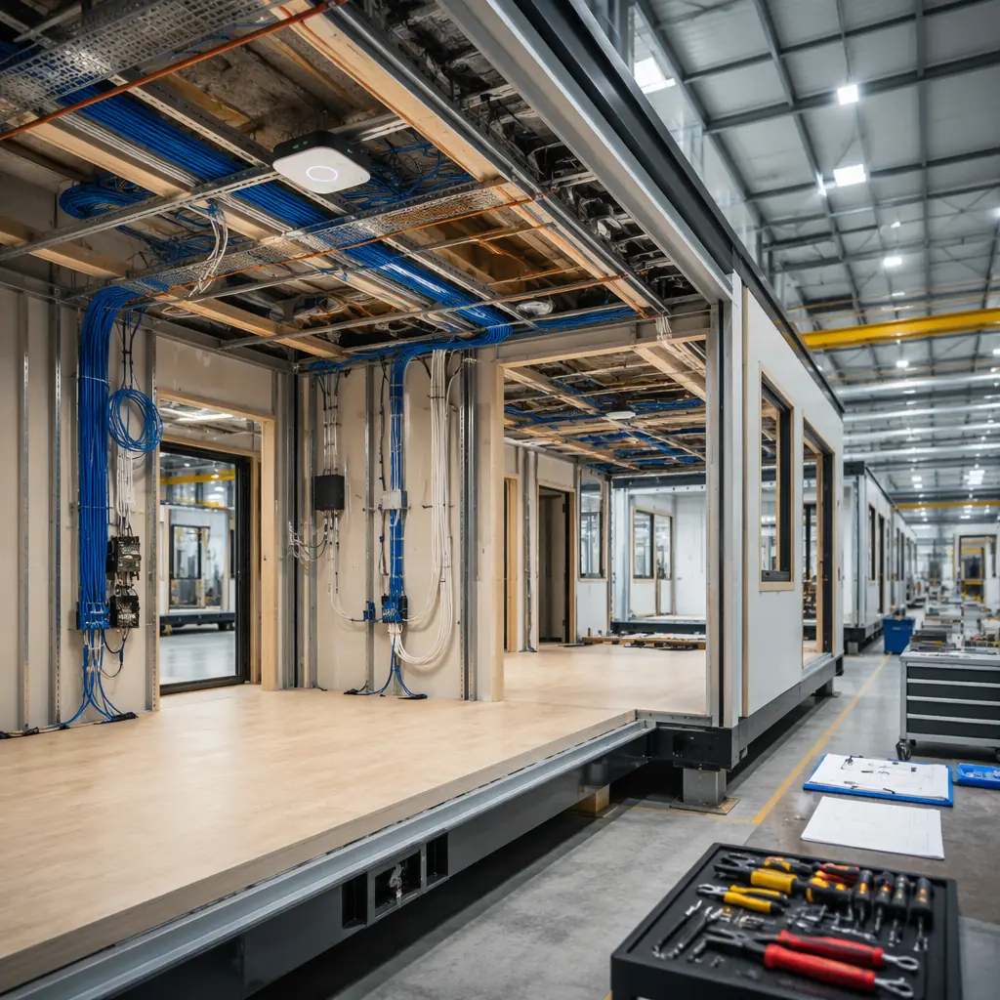
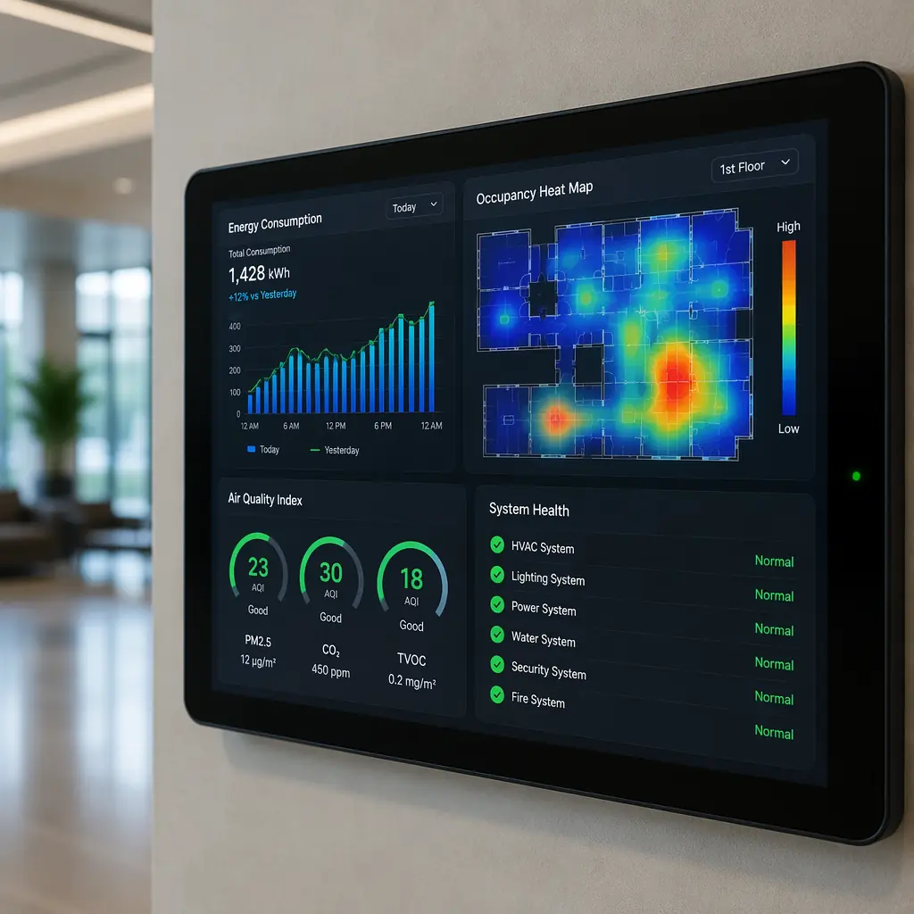
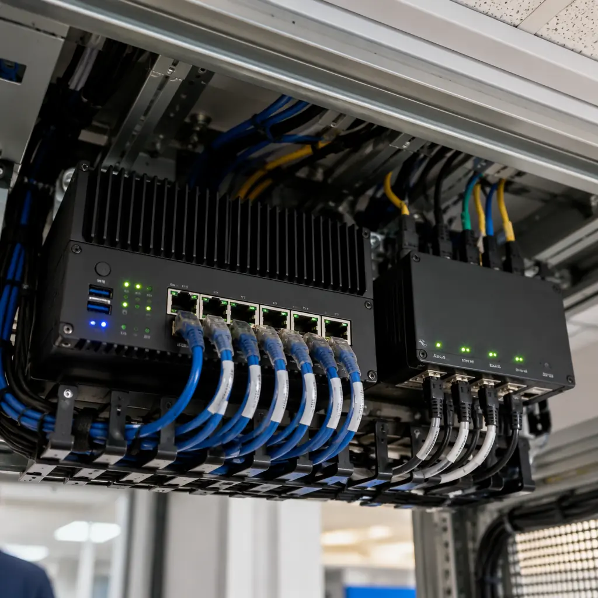

The global smart building market is projected to reach $160 billion by 2029, driven by corporate ESG commitments, energy performance regulations, and occupant expectations that buildings should be as responsive as the devices they carry in their pockets. Yet the industry has a dirty secret: most "smart buildings" are dumb buildings with sensors bolted on after construction. Retrofitting a completed building with IoT infrastructure — installing thousands of sensors, running miles of low-voltage cabling through finished walls, integrating incompatible subsystems from different vendors — typically costs $25–45 per square meter and takes 6–12 months post-occupancy, during which the building operates in "dumb" mode and the promised energy savings fail to materialize. Modular construction changes this equation. When a building is assembled from factory-built modules, every sensor, controller, and network backbone can be integrated during module production — reducing smart system deployment cost by 30–40% and eliminating the post-occupancy retrofit window entirely.
The Smart Building Integration Problem
To understand why modular construction is transformative for smart buildings, it helps to understand why traditional smart building projects fail. The failure modes are remarkably consistent across commercial office buildings, hotels, hospitals, and apartments:
- System fragmentation: A typical commercial building has 6–10 independent building systems — HVAC, lighting, access control, fire alarm, elevator, energy metering, water management, parking — each from a different manufacturer, each with its own protocol (BACnet, Modbus, KNX, DALI, proprietary), and each installed by a different subcontractor who has no incentive to ensure their system talks to the others. The "integration" happens 6–12 months after occupancy when a BMS integrator attempts to connect these orphaned systems through a middleware layer that adds latency, complexity, and failure points.
- Sensor placement is an afterthought. In traditional construction, the electrical subcontractor installs conduit and backboxes according to the electrical drawings, which may or may not reflect the smart building consultant's sensor layout — because the sensor layout was finalized after the electrical rough-in was completed. The result: occupancy sensors in locations that don't actually detect occupancy, CO₂ sensors near supply air diffusers (making readings useless), and daylight sensors shaded by structural elements that weren't in the BIM model. Our analysis of BIM-to-factory digital workflows showed how integrated digital models eliminate these coordination failures.
- Commissioning is sequential, not integrated. Traditional commissioning follows a rigid sequence: HVAC balancing → lighting control calibration → access control testing → BMS integration testing. Each step depends on the previous one being complete, and each step reveals integration issues that require revisiting the previous step. A 200-unit apartment building might spend 12 weeks in commissioning, during which the building management system reports hundreds of "points in alarm" that must be individually investigated and resolved.
- The data architecture is an afterthought. Most traditional buildings collect sensor data into the BMS, which stores it in a proprietary database with limited export capabilities. Extracting that data for analytics, digital twin applications, or ESG reporting requires an additional data integration layer — another vendor, another contract, another 3–6 months of implementation after the building is already occupied.
These problems share a root cause: in traditional construction, smart systems are installed in a building that wasn't designed for them. The building was designed for structural integrity, fire safety, and code compliance — all essential, but none of which require the systems to talk to each other. Modular construction inverts this: because modules are engineered as complete subsystems in a digital environment before any physical work begins, the smart building infrastructure can be designed into the module from day one.
Factory-Integrated Smart Infrastructure: How It Works
In a MODURA factory, each module undergoes a structured smart systems installation process that runs in parallel with structural assembly — not after it:

Sensing Layer: Pre-Installed, Pre-Calibrated
Each module is equipped with a standardized sensor suite during factory assembly. For a typical hotel or apartment module (30–45 m²), the baseline sensor package includes:
- Environmental sensors: Temperature, humidity, CO₂ (NDIR sensor, ±30 ppm accuracy), volatile organic compounds (MOX sensor), particulate matter (PM2.5/PM10 laser scatter), and ambient light (lux meter). All sensors are mounted in a single ceiling-integrated multi-sensor unit that connects to the module's edge gateway via a single PoE cable — eliminating the tangle of individual sensor wiring that plagues traditional installations.
- Occupancy and presence: A combination of passive infrared (PIR) for gross motion detection and 60 GHz mmWave radar for fine presence detection (can detect a stationary person breathing). Unlike PIR-only sensors that turn lights off when someone sits still at a desk, the dual-technology approach maintains accurate occupancy state. The sensor is calibrated in the factory to the module's specific geometry and furniture layout.
- Energy metering: Branch circuit monitoring at the module's electrical panel, providing per-circuit energy consumption data (lighting, HVAC, plug loads, hot water) at 1-second resolution. Data is timestamped at the module edge gateway and synchronized to the building-level platform via NTP.
- Water monitoring: Ultrasonic flow meter on the module's water supply line, with leak detection via a wired moisture sensor rope installed in the module's plumbing chase. Leak events trigger automatic shutoff at the module isolation valve within 3 seconds of detection.
- Indoor air quality demand-controlled ventilation interface: The module's CO₂ and VOC sensors feed directly into the building-level HVAC control system, enabling demand-controlled ventilation at the zone level rather than the floor level. This is the difference between ventilating based on actual occupancy versus a fixed schedule — typically reducing HVAC energy consumption by 15–25% in intermittently occupied spaces.
All sensors are calibrated in the factory against reference instruments, and calibration certificates are stored in the module's digital twin. This eliminates the field calibration step that traditional smart building projects depend on — and that is frequently skipped under schedule pressure. As we covered in our guide to MEP systems integration, factory pre-integration achieves quality levels that field installation cannot match.
Edge Computing Layer: Module-Level Intelligence
Each module includes a compact edge gateway — an ARM-based industrial computer running a containerized software stack — that performs three functions:
- Sensor data aggregation and normalization: Raw sensor readings are time-stamped, validated against expected ranges, and converted to a standardized data model (typically BACnet/IP or MQTT with Sparkplug B payload) before transmission to the building-level platform. This decouples sensor hardware selection from the building platform — if a CO₂ sensor model is discontinued, only the edge gateway's driver needs updating, not the entire BMS.
- Local control loops: The edge gateway executes local automation rules that must function even if the building network is unavailable. Examples: if CO₂ exceeds 1,000 ppm and the module is occupied, increase the VAV damper position to maximum; if a water leak is detected, close the module isolation valve. These rules run on the edge gateway with sub-second latency, independent of cloud connectivity.
- Digital twin synchronization: The edge gateway maintains a real-time digital representation of the module's state — sensor values, equipment status, energy consumption, occupancy — and publishes updates to the building's digital twin platform over MQTT. This is the foundational data layer for the analytics, predictive maintenance, and ESG reporting applications that building owners actually care about.
The edge gateway is factory-configured with the module's specific sensor inventory, automation rules, and network parameters. On site, the only configuration step is connecting the module's network uplink — a single RJ45 or fiber connection — at which point the module self-registers with the building platform and begins publishing data. This plug-and-play commissioning reduces per-module smart system setup from 4–6 hours (traditional) to under 30 minutes.

Digital Twins: From BIM Model to Living Building
The term "digital twin" is widely used and rarely defined with precision. In modular construction, a digital twin has a specific meaning: a real-time, data-linked virtual representation of the physical building that updates continuously as the building operates. This is distinct from a BIM model, which is a static design artifact.
Modular construction has a structural advantage in digital twin creation that traditional construction cannot replicate:
- The digital model is created during design, not after construction. Because every module is designed in a BIM environment before fabrication, the digital twin's geometric model — every wall, duct, cable tray, and sensor location — exists before the physical module does. When the module's edge gateway comes online, the sensor data streams populate this pre-existing geometric model, creating a live digital twin without the 4–8 month laser scanning and model creation process that traditional buildings require. The comparison with BIM-based modular workflow provides the technical foundation for this approach.
- Component-level asset tracking is built in. During factory production, every major component in each module — HVAC unit, electrical panel, plumbing fixture, window assembly — is tagged with a QR code or RFID tag and registered in the module's bill of materials database. This means the digital twin knows not just that "Module 3B has a heat pump," but that it has "Daikin VRV IV-S model RXYQ8TYD, serial number FJ2403-00182, manufactured March 2026, warranty expiration March 2031." When that heat pump's pressure differential trends outside normal range two years into operation, the facility manager receives an alert with the exact model, serial number, and service manual — before the unit fails.
- Predictive maintenance replaces reactive maintenance. A traditional building's maintenance model is reactive: something breaks, a tenant complains, a technician is dispatched. A modular building's digital twin enables predictive maintenance: the platform analyzes trends in equipment performance data — a gradually increasing motor current draw, a slowly declining cooling capacity, a trending vibration signature — and schedules maintenance before the failure occurs. For a 200-unit apartment building, predictive maintenance typically reduces annual maintenance costs by 18–25% and emergency callouts by 40–60% compared to reactive maintenance.
The digital twin also serves as the single source of truth for ESG reporting. Energy consumption, water usage, waste generation, and indoor environmental quality are measured at the module level and automatically aggregated into formats compatible with GRESB, LEED O+M, and EU Taxonomy reporting frameworks. There is no spreadsheet aggregation, no manual data entry, and no audit trail gaps — because every data point is timestamped and traceable to a specific calibrated sensor. For projects pursuing green building certification, our guide to LEED certification for modular buildings explains how this data architecture satisfies the measurement and verification prerequisites.
The Economics: Smart Modular vs Smart Retrofit
The financial case for modular smart buildings becomes clear when comparing the total cost of smart system deployment across construction methods:
| Cost Category | Traditional + Retrofit (per m²) | Factory-Integrated Modular (per m²) |
|---|---|---|
| Sensors and controllers (hardware) | $12–18 | $10–15 (volume purchasing + standardized spec) |
| Cabling and network infrastructure | $8–14 | $5–8 (pre-routed during assembly) |
| Installation labor | $10–18 (field electricians, low-voltage techs) | $4–7 (factory line workers, 50% less time) |
| Systems integration | $6–12 (BMS integrator, 3–6 months) | $2–4 (pre-configured gateways, 2–4 weeks) |
| Commissioning and calibration | $4–8 (field calibration, 8–12 weeks) | $1–2 (factory calibrated, 2–3 weeks) |
| Total per m² | $40–70 | $22–36 |
For a 5,000 m² apartment building (approximately 100 modules), the factory-integrated approach saves $90,000–170,000 in smart system deployment costs. But the larger financial impact comes from time-to-value: the traditional building operates without smart capabilities for 6–12 months post-occupancy, during which it consumes 18–25% more energy than it would with optimized controls. At an average commercial electricity rate of $0.12/kWh and a baseline consumption of 150 kWh/m²/year, the 12-month "dumb period" for a 5,000 m² building costs approximately $22,500–33,750 in avoidable energy consumption — plus the intangible cost of occupant complaints about temperature, air quality, and lighting that the smart systems would have prevented. Our modular construction cost analysis provides a broader framework for comparing total project economics.
Cybersecurity: Why Factory Integration Is More Secure
Smart buildings are cyber-physical systems — a compromise of the building management system can mean unlocked doors, disabled fire alarms, or manipulated HVAC systems that cause equipment damage. Traditional smart building deployments are notoriously insecure because cybersecurity is typically the last item addressed, if it's addressed at all. A 2023 survey by a major building automation vendor found that 47% of commercial building BMS networks had at least one device with default credentials, and 31% had internet-facing BACnet ports with no authentication.
Modular construction enables a fundamentally more secure architecture:
- Zero-trust network architecture is factory-provisioned. Each module's edge gateway is provisioned with unique X.509 certificates during factory commissioning, enabling mutual TLS authentication between the gateway and the building platform. There are no default credentials — the gateway ships with its certificate already installed and its default admin interface disabled. The first time the gateway connects to the building network, it authenticates using its certificate and is assigned to its designated VLAN by a RADIUS server using 802.1X.
- Network segmentation is physical, not logical. In a traditional building, creating separate VLANs for BMS, access control, CCTV, and tenant networks requires careful switch configuration that is frequently misconfigured. In a modular building, the module's patch panel is pre-wired with physically separate ports for building systems (BMS network), tenant services (internet), and life safety (fire alarm) — each port connects to physically separate switches in the building's main distribution frame. A compromised tenant device cannot reach the BMS network because there is no physical path between them.
- Firmware and software updates are managed centrally. The module edge gateways run a containerized software stack with over-the-air update capability. When a critical vulnerability is discovered in a building automation protocol (as happened with BACnet in 2023), the building operator pushes an update to all modules simultaneously — no technician visits, no module-by-module firmware updates, no devices forgotten and left vulnerable. This capability alone addresses the largest cybersecurity gap in existing smart buildings: unpatched, forgotten devices.
These security features aren't expensive add-ons — they're the natural consequence of designing the smart infrastructure into the module from the start, rather than bolting it onto a completed building. As we documented in our coverage of modular building commissioning, factory-integrated systems consistently achieve higher quality and reliability than field-installed equivalents.

Smart Buildings Are the Default, Not the Upgrade
The construction industry treats "smart building" as a premium upgrade — something you add to a project if the budget allows, like upgraded finishes or a rooftop terrace. This framing ignores a fundamental shift in building regulation and tenant expectation. The EU's Energy Performance of Buildings Directive (EPBD) now requires continuous building performance monitoring for all new non-residential buildings over 250 m². California's Title 24 requires demand-controlled ventilation and automatic daylight harvesting controls. Singapore's Green Mark 2024 mandates digital twin submission for buildings over 5,000 m².
Smart building capability is becoming a compliance requirement, not a differentiator. For developers, the question is not whether to include smart systems, but how to deploy them efficiently. Modular construction provides the answer: integrate the smart infrastructure during module production, when access is unlimited, labor is efficient, and quality is verifiable. The result is a building that is smart on day one — not 12 months later, after a painful and expensive retrofit.
Planning a smart-enabled modular building? MODURA's technology integration team can define the sensor specification, edge computing architecture, and digital twin platform for your specific project requirements. Contact us to discuss your smart building goals.